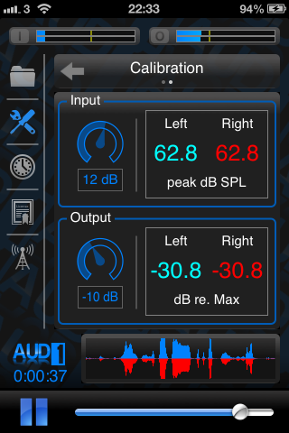

Setup
The advanced settings in AUD-1 are included for users who want the control to get the best possible experience from the app.
Device Settings
 |
The device settings page (shown left) is the first page that the user will see when selecting the tools icon from the navigation bar. The tools icon in the navigation bar is illuminated when this page is visible, and the user can return to this page at any time by tapping the tools icon. The page consists of 3 main controls (1) Audio buffer samples which controls the latency (delay) introduced by the app at the expense of CPU load (2) Active stereo channels which controls whether or not the app should work in full stereo (3) Restore button, which will restore all user adjustable values back to the factory defaults |
Audio buffer samples
This is the number of samples that the app will process before sending the processed sample data to the output. The default setting of 128 will be suitable for most devices, but if you’re experiencing clicks or pops (as a result of an audio dropout) using an older model iOS device, you may need to increase the sample buffer size. This will fractionally increase the delay between the input and output sounds, but only by an undetectable amount to most listeners. Conversely, if you are using an iPhone 5, you can set this value to 64 samples and enjoy the lowest latency possible. Some devices are capable at running using 64 sample buffers when the active stereo channels setting (see below) is set to 1. Experiment and see how low a setting you can use before the audio breaks up.
Using the default setting of 128 samples matches or exceeds the round-trip latency of all other assistive listening iOS apps.
Active stereo channels
This setting can be used to either enable or disable the full stereo processing capabilities of the app. By default, full stereo processing capability is enabled (Active stereo channels has a value of 2). However, if you find that you are using the same settings for each ear (i.e. all chain-link icons are illuminated in the sound shaping group), and you are not using stereo input hardware, then there are advantages to switching the app into single stereo channel mode. These include (1) a reduced CPU load which may result in a longer battery life when AUD-1 is active, and (2) the potential for using a lower number of audio buffer samples to minimize latency on some devices.
NOTE: Do not set “Active stereo channels” to a value of 1 when using stereo input hardware, even if you are using identical settings for left and right ears, as you will lose any benefits of binaural listening.
Restore all settings
This will erase any settings adjustments and will restore the software to its factory defaults. Logging and timer information will be retained as they do not influence the audio processing, but this data can be cleared separately from within the log pages.
Calibration
|  | The calibration page (shown left) can be found to the right of the device settings page. This page contains controls and information related to the software input and output gain. If you are unsure about the descriptions given below, then it might not be a good idea to adjust these values. However these values can easily be restored to their defaults by using the restore button described above. |
 |
Note:Throughout the app, sliders are available to make fine-grained adjustments to various settings. To use these sliders, tap the centre of the widget, and then drag your finger in the vertical plane to adjust the value. Dragging upwards increases the value, while dragging downwards decreases the value. |
Input gain
One of the settings groups on this page contains an input gain control and data related to the input gain. Unless you have a calibrated sound level meter to hand, it is recommended that the user not adjust this setting. The BioAid algorithm that powers the audio processing in AUD-1 expects numerical values representing sound pressure in Pascals. For optimum function, these values must be reasonably accurate. The adjustment knob in the input gain group controls the scalar (represented in dB power) by which the values received from the iOS sound hardware are scaled before being passed to the main algorithm.
The numerical values adjacent to the control knob represent the peak pressure in units of peak dB SPL. The values are passed through a moving average filter so that they rise and fall slowly, allowing them to be read more easily. It may take a few seconds after hitting the play button for these values to stabilize to the level of the input stimulus.
The values shown by the input level indicators on this page are not correlated to the peak level meters shown at the top of the app (or to the right of the app screen when the device is orientated horizontally). The peak level meters show the level of the raw data coming from the sound input hardware of the device. If using sound input hardware with an analogue gain control, adjust the levels so that the input does not clip when used in a noisy environment. You will know if the input is clipping because the left-most meter (or top-most meter if the device is orientated horizontally) will turn red, and hold a red outline for a brief period after clipping has occurred.
For further discussions relating to input calibration, please contact me directly.
Output gain
As well as input gain, the user is also given the option to set the output gain. The adjustment knob in the output gain group controls the scalar (represented in dB power) value by which processed sound is multiplied before being sent to the sound output hardware. This control is different to the master volume control at the bottom of the app, which controls the output level of the actual iOS device.
The default setting of the output gain control is a fairly conservative value. This should not cause the output of the device to clip while the user explores the various combinations of settings on the settings page. To increase the output level of the software, the user should initially use the master volume control at the bottom of the app screen (this can also be adjusted using the hardware volume controls found on the side of the device). To increase the output level further, the user can increase the Dynamic-range focus control from the settings page. If the output level is still insufficient, the user may be able to squeeze a few extra dBs of output from the device by increasing the value of the output gain control.
The numerical values adjacent to the control knob represent the level of the output data sent to the sound reproduction hardware in dB relative to the maximum allowable value before output clipping occurs. Any positive values mean that clipping is definitely occurring. Output clipping will produce a very noticeable and unpleasant wide band distortion sound that will render any environmental sound unintelligible. Unlike the input gain control, the values shown by the output level indicators on this page ARE correlated to the peak level meters shown at the top-right of the app. The peak meters graphically show the same output level data with a higher temporal resolution compared to the numerical values shown in the calibration page. You will know if the output is clipping because the right-most meter (or bottom-most meter if the device is orientated horizontally) will turn red, and hold a red outline for a brief period after clipping has occurred. If clipping occurs in general use, the output gain might be too high and will need to be reduced for the best listening experience.